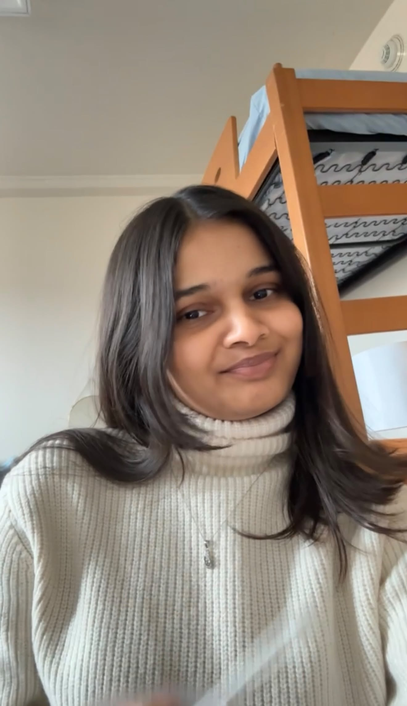

We are a group of students in LIS 500 - Code and Power. Learn more about each of us below.

Yuthika Goel
Hello! My name is Yuthika Goel, and I am a Junior studying Computer Science and Data Science major with certificate in Digital Studies. I decided to take this class because I wanted to explore the intersection between technology, its users and its creators. As a woman interested in technology and motorsport (Formula 1 to be specific) which are two fields where women are severely underrepresented, I'd like to understand how bias and inequality contributes to this disparity. I hope to use what I learn to think more critically about the technology I create and the industries I hope to work in.

Nireekshana Shivarathri
Hi everyone! I’m an international student from India and a Junior at UW-Madison, pursuing a BS in Information Science.

Madeline Root
Hi everyone! I am an Information Science and Communication Arts major. I'm from Baltimore, Maryland and I am a senior at UW-Madison.